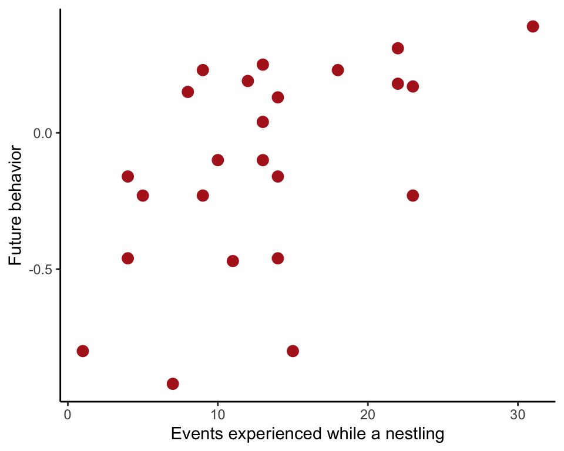
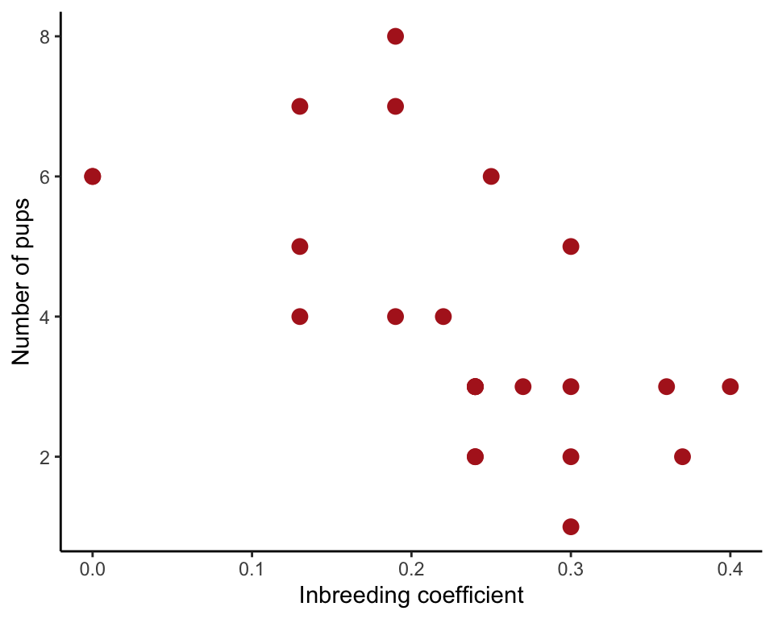
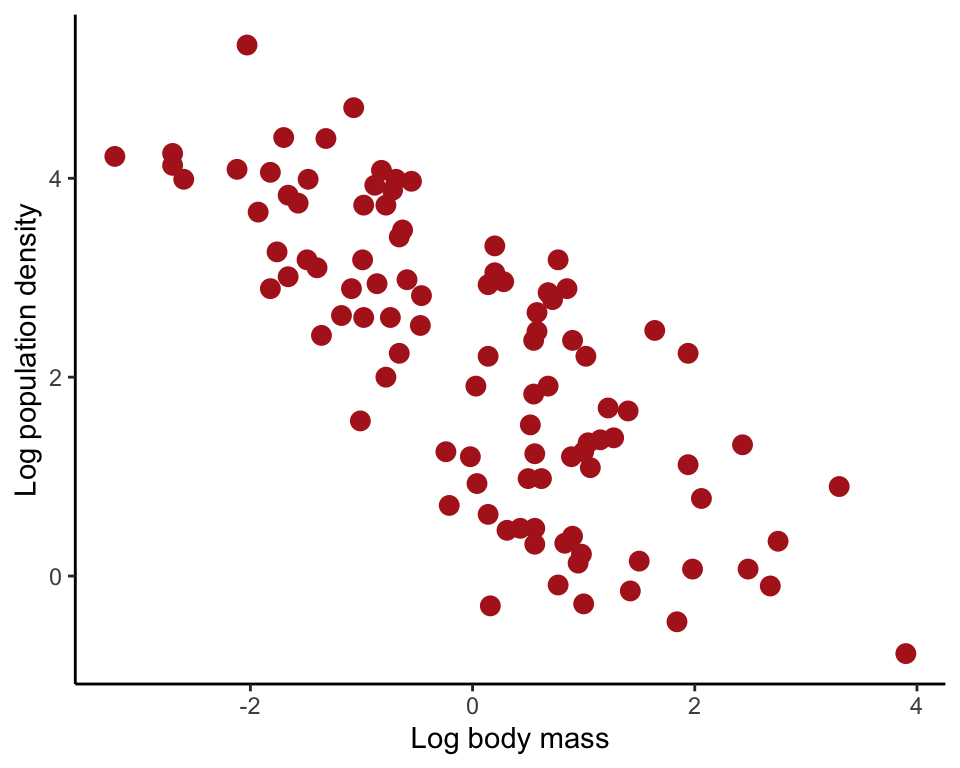
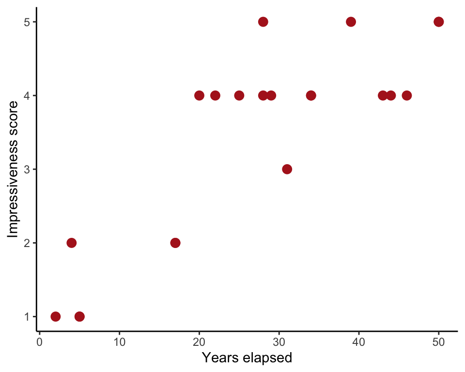

R code for examples in Chapter 2:
Correlation between numerical variables
We used R to analyze all examples in Chapter 16. We put the code here so that you can too.
Also see our R lab on correlation.
New methods on this page
-
Linear correlation:
cor.test(~ futureBehavior + nVisitsNestling, data = booby) -
Spearman rank correlation:
cor.test(~ impressivenessScore + years, data = trick, method = "spearman")
Load required packages
We need to load the ggplot2 package for graphs. We might need the dplyr package for subsetting a data set.
library(ggplot2)
library(dplyr)Example 16.1. Flipping booby
Estimate a linear correlation between the number of non-parent adult visits experienced by boobies as chicks and the number of similar behaviors performed by the same birds when adult.
Read and inspect data
booby <- read.csv(url("https://whitlockschluter3e.zoology.ubc.ca/Data/chapter16/chap16e1FlippingBird.csv"), stringsAsFactors = FALSE)
head(booby)## nVisitsNestling futureBehavior
## 1 1 -0.80
## 2 7 -0.92
## 3 15 -0.80
## 4 4 -0.46
## 5 11 -0.47
## 6 14 -0.46Scatter plot
ggplot(booby, aes(nVisitsNestling, futureBehavior)) +
geom_point(size = 3, col = "firebrick") +
labs(x = "Events experienced while a nestling", y = "Future behavior") +
theme_classic()
Correlation coefficient
The cor.test function computes a number of useful quantities, which we save in the object boobyCor. The quantities can be extracted one at a time or shown all at once. We show the formula method here.
boobyCor <- cor.test(~ futureBehavior + nVisitsNestling, data = booby)
boobyCor##
## Pearson's product-moment correlation
##
## data: futureBehavior and nVisitsNestling
## t = 2.9603, df = 22, p-value = 0.007229
## alternative hypothesis: true correlation is not equal to 0
## 95 percent confidence interval:
## 0.1660840 0.7710999
## sample estimates:
## cor
## 0.5337225If only the estimated correlation \(r\) and its standard error are of interest, they can be obtained as follows. The calculation of standard error uses nrow(booby) to get the sample size for the correlation, but this will only be true if there are no missing values.
r <- boobyCor$estimate
r## cor
## 0.5337225SE <- sqrt( (1 - r^2)/(nrow(booby) - 3) )
unname(SE)## [1] 0.1845381Confidence interval
The 95% confidence interval for the correlation is included in the output of cor.test. It can be extracted from the boobyCor calculated in an earlier step.
boobyCor$conf.int## [1] 0.1660840 0.7710999
## attr(,"conf.level")
## [1] 0.95Example 16.2. Inbreeding wolves
Test a linear correlation between inbreeding coefficients of litters of mated wolf pairs and the number of pups surviving their first winter.
Read and inspect data
wolf <- read.csv(url("https://whitlockschluter3e.zoology.ubc.ca/Data/chapter16/chap16e2InbreedingWolves.csv"), stringsAsFactors = FALSE)
head(wolf)## inbreedCoef nPups
## 1 0.00 6
## 2 0.00 6
## 3 0.13 7
## 4 0.13 5
## 5 0.13 4
## 6 0.19 8Scatter plot
ggplot(wolf, aes(inbreedCoef, nPups)) +
geom_point(size = 3, col = "firebrick") +
labs(x = "Inbreeding coefficient", y = "Number of pups") +
theme_classic()
Test of zero correlation
The results of the test are included in the output of cor.test.
cor.test(~ nPups + inbreedCoef, data = wolf)##
## Pearson's product-moment correlation
##
## data: nPups and inbreedCoef
## t = -3.5893, df = 22, p-value = 0.001633
## alternative hypothesis: true correlation is not equal to 0
## 95 percent confidence interval:
## -0.8120418 -0.2706791
## sample estimates:
## cor
## -0.6077184Figure 16.4-1. Stream invertebrates
Effect of the range of the data on the correlation coefficient between population density of (log base 10 of number of individuals per square meter) and body mass ( g) of different species of stream invertebrates.
Read and inspect data
streamInvert <- read.csv(url("https://whitlockschluter3e.zoology.ubc.ca/Data/chapter16/chap16f4_1StreamInvertebrates.csv"), stringsAsFactors = FALSE)
head(streamInvert)## log10Mass log10Density
## 1 -3.22 4.22
## 2 -2.70 4.25
## 3 -2.70 4.13
## 4 -2.60 3.99
## 5 -2.03 5.34
## 6 -2.12 4.09Scatter plot
ggplot(streamInvert, aes(log10Mass, log10Density)) +
geom_point(size = 3, col = "firebrick") +
labs(x = "Log body mass", y = "Log population density") +
theme_classic()
Effect of the range of the data
Here is the correlation coefficient for the full range of the data. The command uses cor.test but we extract just the correlation coefficient for this exercise.
cor.test(~ log10Density + log10Mass, data = streamInvert)$estimate## cor
## -0.7651667We want to obtain the correlation coefficient for the subset of the data corresponding to a log10Mass between 0 and 2. First subset the data we using either subset() in base R or filter() in the dplyr package.
streamInvertReduced <- subset(streamInvert, log10Mass >= 0 & log10Mass <= 2)
# or
streamInvertReduced <- filter(streamInvert, log10Mass >= 0, log10Mass <= 2)Then recalculate the correlation coefficient.
cor.test(~ log10Density + log10Mass, data = streamInvertReduced)$estimate## cor
## -0.2552496Example 16.5. Indian rope trick
Spearman rank correlation between impressiveness score of the Indian rope trick and the number of years elapsed bewteen the witnessing of the trick and the telling of it in writing.
Read and inspect data
trick <- read.csv(url("https://whitlockschluter3e.zoology.ubc.ca/Data/chapter16/chap16e5IndianRopeTrick.csv"), stringsAsFactors = FALSE)
head(trick)## years impressivenessScore
## 1 2 1
## 2 5 1
## 3 5 1
## 4 4 2
## 5 17 2
## 6 17 2Scatter plot
ggplot(trick, aes(years, impressivenessScore)) +
geom_point(size = 3, col = "firebrick") +
labs(x = "Years elapsed", y = "Impressiveness score") +
theme_classic()
Spearman’s rank correlation
The correlation is part of the output of the cor.test() function. See the next section for the result.
cor.test(~ years + impressivenessScore, data = trick, method = "spearman")Test of zero correlation
In this example, the variable impressivenessScore is a number score with lots of tied observations. Because of the ties, R will warn you that the P-value in the output is not exact.
cor.test(~ years + impressivenessScore, data = trick, method = "spearman")## Warning in cor.test.default(x = c(2L, 5L, 5L, 4L, 17L, 17L, 31L, 20L,
## 22L, : Cannot compute exact p-value with ties##
## Spearman's rank correlation rho
##
## data: years and impressivenessScore
## S = 332.12, p-value = 2.571e-05
## alternative hypothesis: true rho is not equal to 0
## sample estimates:
## rho
## 0.7843363